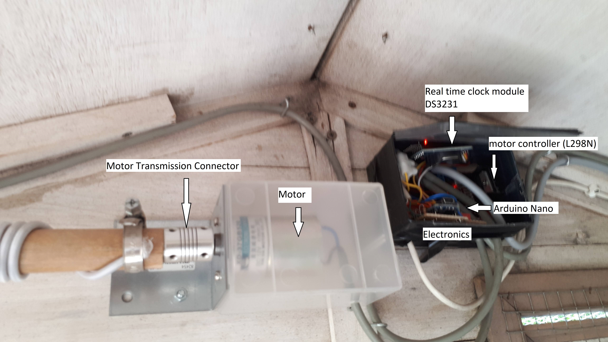

Opens and closes the chicken door in the morning and evening.
A light sensor is used to determine when it is openen and closed.
However also a clock module (DS3231) can be attached to not open the door before a given time.
This for the summertime to not open it too soon. Early in the morning when there is already light but not many people are awake the preditors are still around...
But even without that clock module it is possible to work on time via the timer from the arduino.
Unfortunately this timer is not very acurate and after a couple of days it is already seconds out of sync.
For this to work, the current time must be provided each time the arduino resets.
This is not the case with the timer module because it works on its own and it even has a battery to keep the time when power is disconnected.
So for that timer module the date/time must only be set once.
Two leds also show if the door is (about to) open or closed and also to show if there is an error.
When the door is open, the red led is on. When the door is closed, the green led is on.
The colors are chosen as such because green means the chickens are safe and red means they are unsafe.
I chose for a 2-in-one led (with 3 connections)
A minute or two before the opening/closing the red or green led starts to blink every second to indicate the event is about to happen.
When it is dark and thus the door should be closed, the system checks every second if the magnetic switch still says that the door is closed.
If not, then it closes the door again. This in case an agressor tries to open the door (by pulling it).
If the door is closed manually during the day (for example because the chickens may not enter or exit the henhouse), the system will not run the motor anymore to open or close
the door until the door is manually opened again. This must of course be done during light when the door is supposed to be open.
Also the leds will not change anymore until the door is opened again.
Opening the door again can then be done during light or dark.
In dark, the door will then close again via the motor and when light the door will stay open until it becomes dark.
If there is an error, the red led will blink as many times as the error status and then two seconds off and then blink again.
When power is switched on, the first minute nothing will happen and the system waits for commands you can enter.
Each time a command is given, the minute starts again. There are commands to manually open and close the door, doing this repeatingly, ... H gives a help screen.
Then it starts with first closing the door (if it is not closed yet) and then depending on the light it stays closed (night) or opens (day).
This is done as such because a magnet switch can detect if the door is closed. When the magnet is not at the switch, the door is (possible only partially) open.
As such the system knows after this exactly if the door is open or closed.
So closing the door is done until the magnet switch says it is closed but there is also a timer to make sure the motor doesn't stay on if something goes wrong and then the system goes into error
Opening the door is done with a timer because the system has no detector if it is completely open. It is not a problem if the motor runs a bit longer because this means only that the cable is looser.
Note that not a hard cable is used on the door but an elastic. That way when the door is closed there is some elastic on the cable.
Also when the system detects that the door is closed it will close it again for a couple of milliseconds to tighten it extra.
This is tried max 10 times because it can happen that the motor cannot hold the force and returns a bit but it practice most of the time only 1 time must be tried.
Since my door is a trap door (like a medieval castle), also an elastic is on the outside to pull it open the first centimeters (and then gravity takes over).
I use an elastic used for bicycles to hold things on the rack.
Make sure that the door is not closed and that there is enough light (daytime) the first time the system is taken into operation.
That will make the system setup automatically properly. The ax will turn one way or another and eventually wind up the elastic and close the door.
To open it, the motor will turn the other way and thus unwind the elastic.
Also when in normal operation commands can still be given. Note that the first minute alot is shown in the output but once in normal operation there is no much logging anymore.
This can be changed by the L command. Again, the H command shows a help screen with all the commands.
Note also that by default de arduino resets when the monitor is started (Ctrl Shift M)
So you also loose all your variables :-(
This can be fixed with a condensator between the reset pin and gnd. I have used a 0.47 µF and this works fine.
However note that it must be disconnected when a new sketch is uploaded. Otherwise you get an error that it could not upload. I use a small switch to do that.
 Led.jpg)
 Led.jpg)



The code
My inspiration: Automatisch kippenluikje zelf maken - techniek en dier